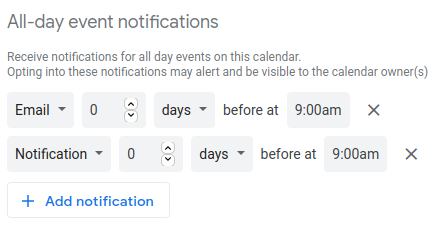

However long our Life seems to be, it has an elusive Limit. For short-term projects, we understand that deadlines are essential to beat procrastination but what about something long-term as our Life?
We tend to overlook its ultimate deadline - Death because it's difficult to keep track of such a long period.
To see a zoomed-out view of your Life, go ahead and check out if it's really that long when broken down in a grid of weeks?
Yep, that's how short your life really is!
All your dreams & life-goals, need to be accomplished before you run out of the finite unfilled boxes you've left of. Are you making the most of your weeks?
You can further see how fast your life progresses by clicking or hovering over these week boxes.
Mon 01 Jan, 2000 — Sun 07 Jan, 2000
0000
out of
0000
weeks used
00.00%
Life used
by the end of it
This web app is based on Tim Urban's blog post "Your Life in Weeks" at WaitButWhy. I first encountered this idea in his outstanding TED talk - "Inside the mind of a master procrastinator" where he explains how a procrastinator's system functions in terms of three comic characters. If you haven't seen it yet, I'd highly recommend you to watch this creatively humorous masterpiece!
At the end of this talk, he highlights how procrastination makes people suffer and left them feeling frustrated in non-deadline situations like Life because there is nothing to create a panic that is necessary to get things done! This is where he introduces this concept of the life calendar to remind us of the limited number of week boxes that we have in our lives. I loved this idea so much that I have to create a web app that can allow me (and of course you) to incorporate this sense of deadline in our lives. 😀
A normal year has 52 weeks and 1 day, whereas a leap year has 52 weeks and 2 days. Since weeks don't completely fit in a year, the remaining days accumulate together in 5 or 6 years to form an extra week. This way, app logic makes sure that your birthdays always fall in the 1st week of your age year. Otherwise, they would have shifted to the right end of the grid, breaking the symmetry of week-to-age mapping.
If you think about it, this is same as how the concept of leap year works. Since the earth completes a revolution in 365 and 1/4th day, an extra day gets accumulated every 4 years making it a leap year. This way, the new year always begins from 1st January otherwise, it would have shifted to subsequent dates.
If you were not born on Monday (or Sunday), this might be bothering you. It is because the years here are your age years, not our usual calendar years. So the 1st week of your life starts on the day you were born and the following weeks continue the same 7-day cycle.
You might still be unsatisfied because you want the starting date of the week boxes to sync up with that of the weeks in the calendar app where you are adding this. Don't worry, we can achieve this sync by assuming that the first week of your life starts on Monday (or Sunday) even though you were born on a later day in that week. Leave a thumbs up on this open issue to let me know that I should implement this functionality in the next version of this app.
This file is an iCalendar file (.ics) that is a standard calendar format used to transfer calendar data on the internet. Thus it can be imported easily in any calendar app you use. It consists of all-day events for the starting date of each week box, along with corresponding stats in the event description to remind you of the limit of your life.
Following are the instructions to import it in Google Calendar. For other calendar apps, the steps would still be the same except for the specifics which you can easily find on the internet.
Go to Settings > Add calendar > Create new calendar. Give it a suitable name like "Limit of Life", and click on Create calendar button.
Importing events from this file in a "new" calendar is highly recommended because it will allow you to control notifications settings of all events together and will prevent the risk of messing up your default calendar.
Under Settings for my calendars section, select the calendar we just created - "Limit of Life". Scroll down to All-day event notifications and add notifications for the time of day when you can sit for a while to reflect on how you've used your past week and how you want to use the upcoming one. Besides, you can also check stats like how much life you have spent within the event description.
For me, these notifs look like this (emails are hard to miss 😅):
Within settings, go to Import & export > Import. Upload the iCal file you've downloaded, and make sure to select the new calendar we created (named "Limit of Life") in Add to Calendar dropdown. Click on Import button and wait for at least 1 min - events spanned throughout your remaining lifetime are being added!
You may see "Oops! we couldn't import this file, try again in a few minutes". Don't worry, this a potential bug I observed in Google Calendar when importing large files. Go back to your calendar, you should be able to see the events, if the "Limit of Life" calendar is checked in the sidebar.
Observe the starting date of the last week of your life in the grid and open it in your calendar. You can do this quickly by appending /<year>/<month>/<date> for that date, to the URL in the address bar. In the open week or month, you should see a "Limit of Life" event scheduled.
You might be wondering why isn't there any automatic way to import these events. There is one but for that, you'd need to authenticate this app to access your calendar. So respecting your privacy concerns & trust issues, I didn't build that feature. But if you still want it, give a thumbs up on this open issue, or if you know a better way for adding bulk events, let me know by putting a comment there.
Until then, you have to do the importing manually - don't procrastinate, it only takes < 5 min! 😜